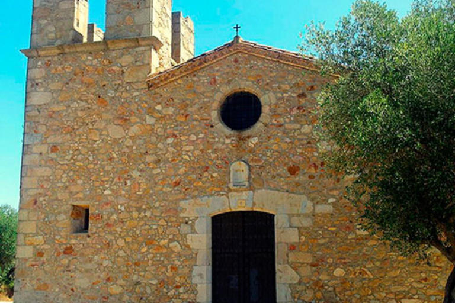

Visita · Platja d'Aro
S'anomena també Santa Maria de Fenals de Baix en contraposició a la vella església romànica de Santa Maria de Fenals d'Amunt. Està protegida per la denominació de Bé Cultural d'Interès Local. És…